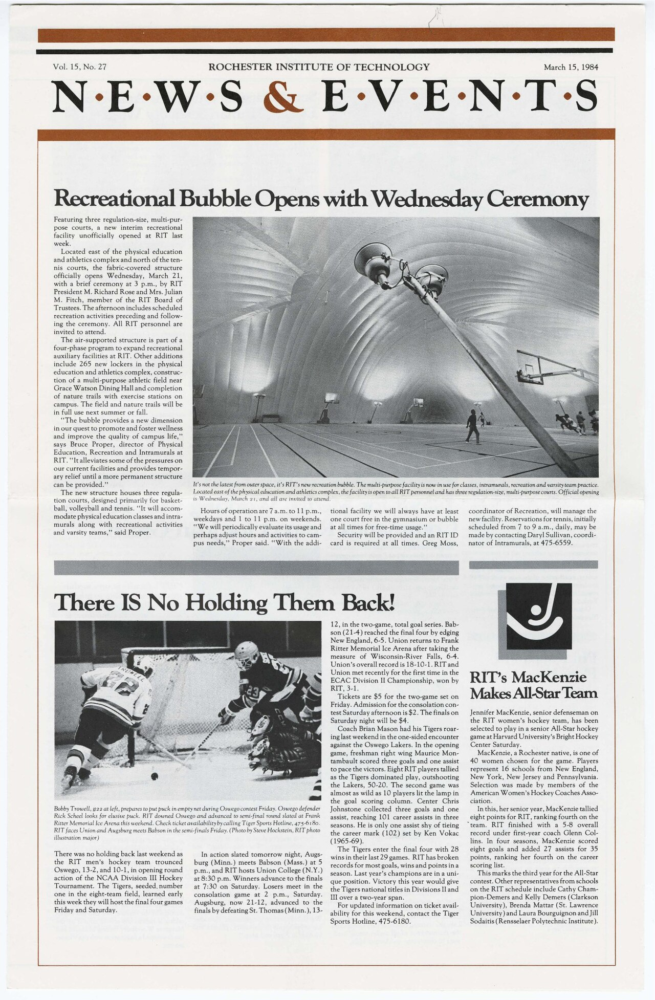

Culture • Daily Issue
The Public Culture Shock: Why America’s arts and media lifelines are being forced to reinvent themselves at once
A wave of federal defunding, court fights, budget stress, and audience fragmentation is reshaping the institutions that make culture public, local, and shared.
Read story